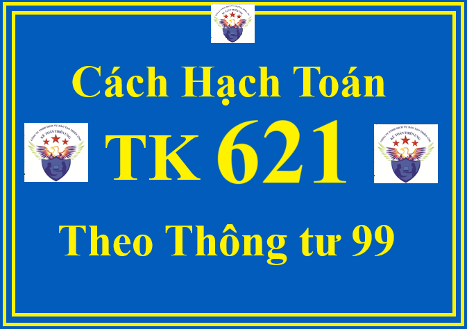

Tài khoản 621 theo Thông tư 99/2025/TT-BTC dùng để phản ánh chi phí nguyên liệu, vật liệu sử dụng trực tiếp cho hoạt động sản xuất sản phẩm, thực hiện dịch vụ của doanh nghiệp.
1. Các nguyên tắc kế toán cần thực hiện khi hạch toán TK 621 theo Thông tư 99/2025/TT-BTC
+ Chỉ hạch toán vào Tài khoản 621 những chi phí nguyên liệu, vật liệu (gồm cả nguyên liệu, vật liệu chính và vật liệu phụ) được sử dụng trực tiếp để sản xuất sản phẩm, thực hiện dịch vụ trong kỳ sản xuất, kinh doanh. Chi phí nguyên liệu, vật liệu phải tính theo giá thực tế khi xuất sử dụng.
+ Trong kỳ kế toán thực hiện việc ghi chép, tập hợp chi phí nguyên liệu, vật liệu trực tiếp vào bên Nợ Tài khoản 621 - Chi phí nguyên liệu, vật liệu trực tiếp theo từng đối tượng sử dụng trực tiếp các nguyên liệu, vật liệu này (nếu khi xuất nguyên liệu, vật liệu cho quá trình sản xuất sản phẩm, thực hiện dịch vụ, xác định được cụ thể, rõ ràng cho từng đối tượng sử dụng); hoặc tập hợp chung cho quá trình sản xuất, chế tạo sản phẩm, thực hiện dịch vụ (nếu khi xuất sử dụng nguyên liệu, vật liệu cho quá trình sản xuất sản phẩm, dịch vụ không thể xác định cụ thể, rõ ràng cho từng đối tượng sử dụng).
+ Tại thời điểm kết thúc kỳ kế toán, thực hiện kết chuyển (nếu nguyên liệu, vật liệu đã được tập hợp riêng biệt cho đối tượng sử dụng), hoặc tiến hành tính phân bổ và kết chuyển chi phí nguyên liệu, vật liệu (nếu không tập hợp riêng biệt cho từng đối tượng sử dụng) vào Tài khoản 154 - Chi phí sản xuất, kinh doanh dở dang phục vụ cho việc tính giá thành sản xuất của sản phẩm, dịch vụ trong kỳ kế toán. Việc phân bổ trị giá nguyên liệu, vật liệu vào giá thành sản phẩm, dịch vụ, doanh nghiệp phải dựa trên cơ sở các tiêu thức phân bổ phù hợp với đặc điểm hoạt động sản xuất kinh doanh và yêu cầu quản lý của doanh nghiệp.
+ Khi mua nguyên liệu, vật liệu, nếu thuế GTGT đầu vào được khấu trừ thì trị giá nguyên liệu, vật liệu sẽ không bao gồm thuế GTGT. Nếu thuế GTGT đầu vào không được khấu trừ thì trị giá nguyên liệu, vật liệu bao gồm cả thuế GTGT.
+ Phần chi phí nguyên liệu, vật liệu trực tiếp vượt trên mức bình thường không được tính vào giá thành sản phẩm, dịch vụ mà phải kết chuyển ngay vào Tài khoản 632 - Giá vốn hàng bán.
2. Kết cấu và nội dung phản ánh của Tài khoản 621 - Chi phí nguyên liệu, vật liệu trực tiếp theo Thông tư 99/2025/TT-BTC
|
Bên Nợ:
|
Bên Có: |
| Trị giá thực tế nguyên liệu, vật liệu xuất dùng trực tiếp cho hoạt động sản xuất sản phẩm hoặc thực hiện dịch vụ trong kỳ kế toán. |
- Kết chuyển trị giá nguyên liệu, vật liệu thực tế sử dụng cho sản xuất, kinh doanh trong kỳ vào Tài khoản 154 - Chi phí sản xuất, kinh doanh dở dang và chi tiết cho từng đối tượng để tính giá thành sản phẩm, dịch vụ.
- Kết chuyển chi phí nguyên vật liệu trực tiếp vượt trên mức bình thường vào Tài khoản 632 - Giá vốn hàng bán.
- Trị giá nguyên liệu, vật liệu trực tiếp sử dụng không hết được nhập lại kho.
|
| Tài khoản 621 không có số dư cuối kỳ. | |
3. Cách định khoản hạch toán Tài khoản 621 theo Thông tư 99/2025/TT-BTC
a) Khi xuất nguyên liệu, vật liệu sử dụng cho hoạt động sản xuất sản phẩm hoặc thực hiện dịch vụ trong kỳ, ghi:
Nợ TK 621 - Chi phí nguyên liệu, vật liệu trực tiếp
Có TK 152 - Nguyên liệu, vật liệu.
b) Trường hợp mua nguyên liệu, vật liệu sử dụng ngay (không qua nhập kho) cho hoạt động sản xuất sản phẩm hoặc thực hiện dịch vụ, ghi:

Nợ TK 621 - Chi phí nguyên liệu, vật liệu trực tiếp
Nợ TK 133 - Thuế GTGT được khấu trừ (nếu có)
Có các TK 111, 112, 141, 331,...
c) Trường hợp số nguyên liệu, vật liệu xuất ra không sử dụng hết vào hoạt động sản xuất sản phẩm hoặc thực hiện dịch vụ cuối kỳ nhập lại kho, ghi:
Nợ TK 152 - Nguyên liệu, vật liệu
Có TK 621 - Chi phí nguyên liệu, vật liệu trực tiếp.
d) Đối với chi phí nguyên vật liệu trực tiếp vượt trên mức bình thường hoặc hao hụt được tính ngay vào giá vốn hàng bán, ghi:
Nợ TK 632 - Giá vốn hàng bán
Có TK 621 - Chi phí nguyên liệu, vật liệu trực tiếp.
đ) Đối với chi phí nguyên vật liệu sử dụng chung cho hợp đồng BCC tại bên kế toán cho hợp đồng BCC
- Khi phát sinh chi phí nguyên vật liệu sử dụng chung cho hợp đồng BCC, căn cứ các chứng từ liên quan, ghi:
Nợ TK 621 - Chi phí nguyên liệu, vật liệu trực tiếp (chi tiết từng hợp đồng)
Nợ TK 133 - Thuế GTGT được khấu trừ (nếu có)
Có các TK 111, 112, 331,...
- Định kỳ, kế toán lập Bảng phân bổ chi phí chung (có sự xác nhận của các bên) để phân bổ chi phí nguyên vật liệu sử dụng chung cho hợp đồng BCC cho các bên, ghi:
Nợ TK 138 - Phải thu khác (chi tiết cho từng đối tác)
Có TK 621 - Chi phí nguyên liệu, vật liệu trực tiếp
Có TK 133 - Thuế GTGT được khấu trừ (nếu chia thuế đầu vào)
Có TK 3331 - Thuế GTGT phải nộp (nếu thuế đầu vào của chi phí chung đã khấu trừ hết, phải ghi tăng số thuế đầu ra phải nộp).
e) Tại thời điểm kết thúc kỳ kế toán, căn cứ vào Bảng phân bổ nguyên liệu, vật liệu tính cho từng đối tượng sử dụng nguyên liệu, vật liệu (phân xưởng sản xuất sản phẩm, loại sản phẩm, công trình, hạng mục công trình của hoạt động xây lắp, loại dịch vụ,... theo phương pháp trực tiếp hoặc phân bổ) để kết chuyển chi phí nguyên liệu, vật liệu trực tiếp, tính giá thành sản phẩm, dịch vụ, ghi:
Nợ TK 154 - Chi phí sản xuất, kinh doanh dở dang
Nợ TK 632 - Giá vốn hàng bán (phần vượt trên mức bình thường)
Có TK 621 - Chi phí nguyên liệu, vật liệu trực tiếp.